Custom Model Guide
Info
This guide is relatively recent and could probably be improved.
If you have used it and are familiar with the model editing workflow, please consider helping us.
This guide is generic and can be used with any supported version of Riders.
Note
The tooling at the moment in time only targets Windows. If you have a demand for alternate OS support, please let us know. Model exporter requires triangle stripping dependency with no native Python implementation. [Public contributions would be welcome!!]
Todo
Packing textures. We kinda forgot to add this, but we gotta nap.
We'll add it tomorrow 'I Sewer'
Prerequisites
You will need to download the following items first.
| Program | Purpose |
|---|---|
| .NET 5 Runtime (Windows) | Required to run Sewer's Sonic Riders tools. |
| Blender | Modelling software. |
| Sega NN Tools | Blender Plugin for Riders' Model Formats (and 20+ other games!). |
| RidersArchiveTool | Sewer's tool for extracting compressed Riders archives. |
It's recommended to download Blender from Steam; in order to receive automatic updates.
Finding Game Files
PC Riders
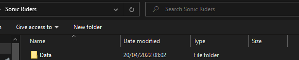
In the PC Version of Sonic Riders, there exists a folder called Data. This folder will have all of the files necessary to perform model edits.
GameCube Riders
Info
For the GameCube port of the game, you will first need to extract the ROM. The guidance below shows how to do that with Dolphin Emulator.
To do so, right click the game on your game list, and select Properties.
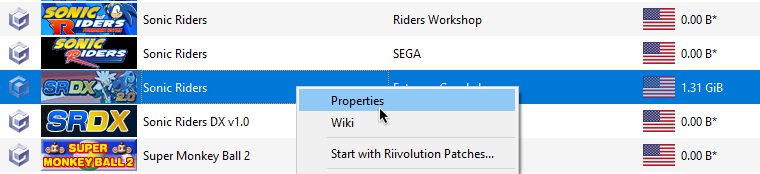
Then scroll right to the FileSystem section, right click Disc and select Extract Entire Disc.
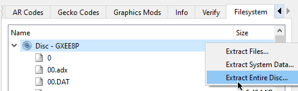
Go to the folder where you have extracted the ROM, and into the files folder.
You will be getting the original models from this folder.
(If this folder has >1000 files and/or contains a _Main.rel file then you probably found the right one.)
Finding Models
Info
This section describes where to find your desired game models to edit.
This wiki contains a very useful page known as the File Listing. This page contains a list of all files in Vanilla PC Riders including what they are, and what they contain.
In the case of player models, they use the format P{X}{YY}, where:
- P represents 'Player'.
- {X} is a single letter that is a shorthand for character. e.g. 'S' is Sonic, 'T' is Tails
- {YY} number that represents the gear. e.g. 00 is Default Gear.
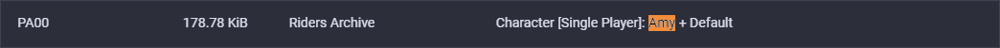
Tip
It is recommended you pick a model with similar proportions to the model you're replacing.
For example, if you're adding a human-like character; consider replacing Ulala.
Extracting Models
Info
This section describes how to extract the Riders Archives e.g. PA00 to obtain the models.
Extracting Archives
If you already know Commandline.
RidersArchiveTool.exe extract --source <pathToArchive> --savepath <whereToOutput>.
Include --bigendian if working for GCN.
For this you will use RidersArchiveTool.exe that you have downloaded previously from the prerequisites.
This is a commandline tool, so you will need to use the Command Prompt.
- Open a
Command Promptwindow (PressSuper (Windows)key, searchcmdand pressEnter). - Drag
RidersArchiveTool.exeover thecmdwindow. - Press
spaceand type inextractto make<some_folder_path>/RidersArchiveTool.exe extract, and pressenter.
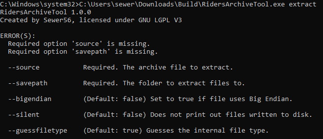
This will show you the available options for extraction. In this case, we will want to specify --source and --savepath; to create a command such as RidersArchiveTool.exe extract --source "D:\Games\ISOs\Sonic Riders Vanilla\files\PA00" --savepath "C:\Users\sewer\Downloads\Build\output" --bigendian.
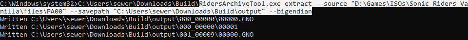
Finding the Model
Info
Demonstrates where the model is inside the extracted archive.
Inside the extracted folder you will find folders under the name XXX_YYYYY. XXX represents the original order of the file in the archive and YYYYY represents the type of the contents of that group of files. The known YYYYYs are documented over at File Formats.
In any case, for Player models, this is 00000.
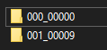
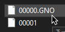
Model formats use the .*NO extension. For GameCube, this is .GNO; for PC this is .XNO.
You can now import this model into Blender.
Info
The Vanilla game combines the player model and gear e.g. PA00 would contain Amy and her Default Gear.
Modern mods of Sonic Riders separate these models; so there's usually only 1 model for each character and 1 model (in a separate file) for each gear. Guidance for that will be available in the future.
Working with Blender
Installing the Plugin
Info
Demonstrates how to install and run the plugin in Blender.
Warning
You must download the latest version of the plugin from source code by clicking Code and then Download Zip on the page for NN Tools. The current GitHub Release does not yet contain the exporter.
(If you used the guide in the link, nothing to worry about.)
To install the importer & exporter plugin, go to Edit->Preferences, and navigate to the Add-ons menu.
Click Install and select the zip file for the plugin (This will probably be called Sega_NN_tools-master.zip).
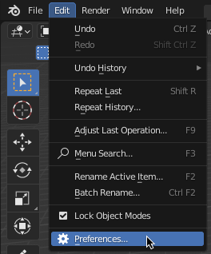
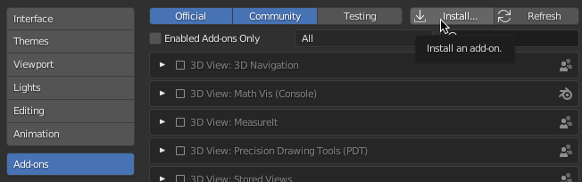
Click Install and select the zip file for the plugin (This will probably be called Sega_NN_tools-master.zip).
Once you have installed the plugin, search for NN, and enable the Sega NN Tools plugin using the checkbox.
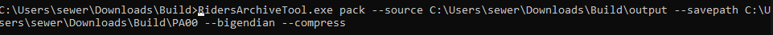
Importing Models
Info
Demonstrates how to import an existing model into Blender.
Open the NN Tools sidebar menu by pressing N on your keyboard while in 3d view, and selecting the NN Tools tab screenshot, left.
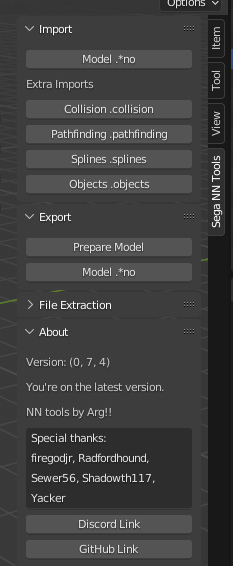
Press Model *.no under Import and select the format (.GNO for GameCube or .XNO for PC), and Sonic Riders from the games list, navigate to your extracted model from earlier and press Import.
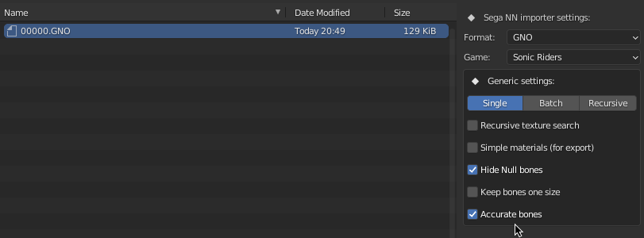
Renaming Bones
Info
Renaming bones using a blender script.
Imported Riders models will have autogenerated bone names, which are inconvenient to work with when rigging models.
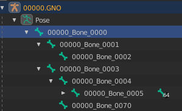
To fix this (at least for non-bike locked characters like Eggman), a blender script is provided below.
import bpy
from bpy.types import Armature, Object
bone_names = \
['Root', 'Board', 'Board_Mesh', 'Player', 'Body', 'Hips', 'Spine_1', 'Spine_2', 'Spine_3', 'Head_Root', 'Bone',
'Head_Spike_1', 'Head_Spike_2', 'Head_Spike_3', 'Head_Spike_1_L', 'Head_Spike_2_L', 'Head_Spike_3_L',
'Head_Spike_1_R', 'Head_Spike_2_R', 'Head_Spike_3_R', 'Ears_Root', 'Ear_1_L', 'Ear_2_L', 'Ear_3_L', 'Ear_1_R',
'Ear_2_R', 'Ear_3_R', 'Head_Front_Hair', 'Head', 'Glasses', 'Shoulder_L', 'UpperArm_L', 'ForeArm_L', 'Hand_L',
'Hand_Rest_L', 'Hand_Flat_L', 'Hand_Splay_L', 'Hand_Fist_L', 'Hand_Peace_L', 'Hand_Point_L', 'Shoulder_R',
'UpperArm_R', 'ForeArm_R', 'Hand_R', 'Hand_Rest_R', 'Hand_Flat_R', 'Hand_Splay_R', 'Hand_Fist_R', 'Hand_Peace_R',
'Hand_Point_R', 'Tail_Root', 'Tail_1', 'Tail_2', 'Tail_3', 'Tail_1_R', 'Tail_2_R', 'Tail_3_R', 'Tail_1_L',
'Tail_2_L', 'Tail_3_L', 'Thigh_L', 'Calf_L', 'Foot_L', 'Toe_L', 'Toe_End_L', 'Thigh_R', 'Calf_R', 'Foot_R',
'Toe_R', 'Toe_End_R', 'Body_Render']
def rename_bones():
obj: Object = bpy.context.selected_objects[0]
arma: Armature = obj.data
for bone, b in zip(arma.bones, bone_names):
bone.name = b
if __name__ == "__main__":
rename_bones()
Select the armature/rig inside the Blender Scene Explorer and navigate to the Scripting tab. Paste the script and press the Run button.
Rigging the Model
Info
Applying the armature of the old model to your new model; to make it compatible with existing animations.
Delete the meshes of the old model, and the armature of the new model you are replacing it with.
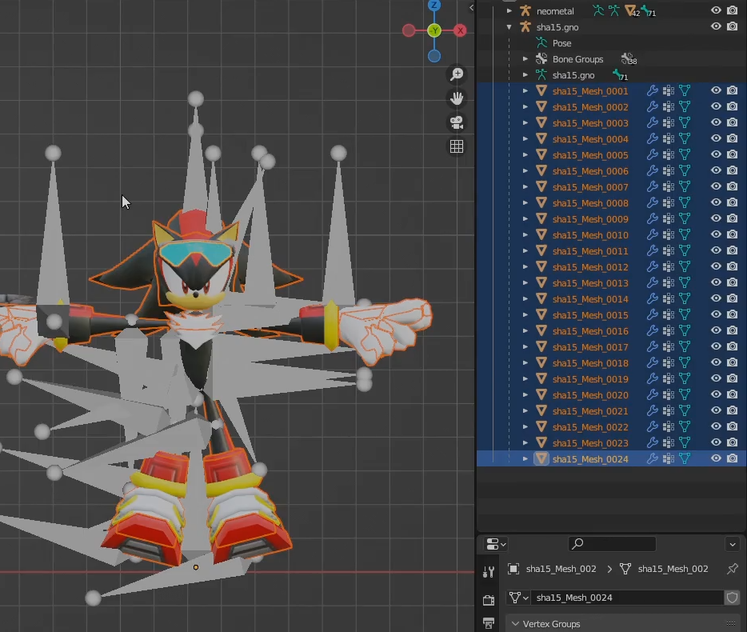
(Pictured: Deleting old meshes.)
Align the model armature over the new model. An easy way to do this is to center the position of both models to 0,0,0 in the Transform window.
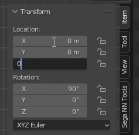
(Select old model in scene explorer, set transform to 0,0,0; repeat for new model)
Getting A Nicer View
Tip
Work with Wireframe mode (Hotkey: Z) to be able to see the bones and the model at the same time.
It's highly recommended that you change the bones to display as a stick in the Viewport Display. Working with the defaults can be pretty messy.
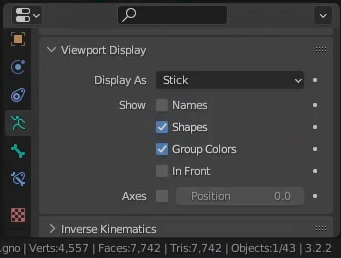
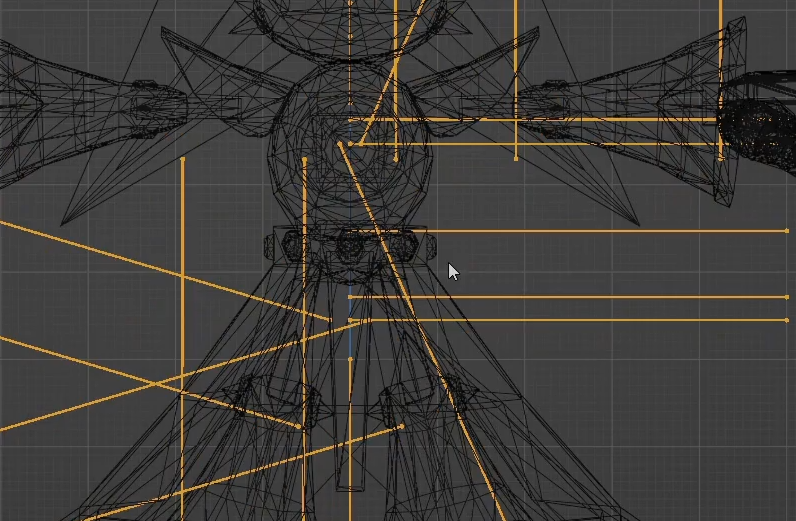
(this is cleaner than the alternative...)
Adjusting Bone Positions
Tip
Before adjusting the bones manually, consider scaling the bones to get a better fit with the new model.
Once the old bones and new model are overlaid, it is recommended to manually move the bones to better match the model.
e.g. you will want to nudge bones such that for example, a knee bone would match the middle of the knee rather than being off center.
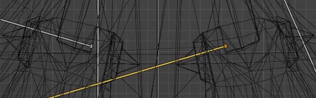
[Bad Positioning, Does not Match Knee Center]
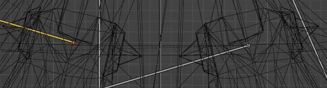
[Better Positioning]
Warning
Be careful when moving bones. You should not move the bones' head or tail individually. Only move the bone as a whole. Moving head/tail individually will result in messed up animations due to a change in rotation.
Assigning Weights
Info
This part involves assinging 'weights' of vertices to individual bones in the armature.
'Weights' influence how movements of the bone affect movements of the individual vertices and is how animations work.
First hide the armature, by selecting it and pressing the little eye icon (alternatively Hotkey: H).
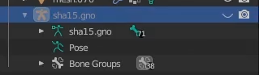
Select everything with A on keyboard, unhide the armature (ctrl+click it in scene viewer, and Alt+H) and click one of the bones while holding Shift.
Then press Ctrl+P to parent. Select Armature Deform: With Empty Groups.
We have now made the meshes children to the rig, so you can go ahead and weight paint the model.
Tip
Automatic weights are not recommended, will likely weight to wrong bones due to sheer bone count.
Tip
You are now ready to weight.
Consider learning how to do this through external tutorials on YouTube and co.
Key phrase to search is 'weight painting blender guide'.
Preparing Materials
Info
The Material set up listed here is expcted to change in the future to allow more customisability, and to show in blender what the model will look like in game more accurately.
Open blenders Shading Tab on the Top Bar to view blenders material set up.
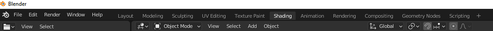
Then select a mesh of your model. In the area below your model, you will see the materials set up for that mesh. For Riders, there are a few material types supported:
-
Diffuse texture (texture that puts colour on the mesh):
DiffuseTexture -
Reflection texture (texture that makes the mesh look reflective):
ReflectionTexture -
Emission texture (texture that allows the mesh to emit light):
EmissionTexture
For the textures in the material area, you want to set the images node name to be the images type by opening the side menu with the key N on your keyboard.
For example:
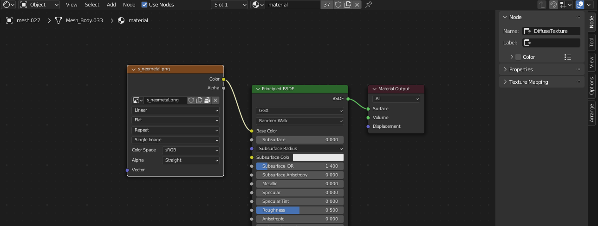
This would be read by the tool as a valid texture assigned to the model.
Please make sure your textures node name is DiffuseTexture, ReflectionTexture or EmissionTexture, otherwise it will not be used.
Tip
Some models have a material per mesh. It would be a good idea to cycle through each mesh and check their material to make sure you dont have any untextured meshes.
Tip
Some models have multiple materials per mesh. You can cycle through these by changing slots and the top of the shader view, where its labelled Slot 1, next to the material name.
Model Finalisation and Exporting
Tip
Apply your modifiers (excluding the armature modifier) before continuing. If you don't know what modifiers are you don't have to do anything.
The final step before you export is to run the prepare model function. This was originally going to be part of the exporting function, but having it separate cuts down on how long it takes to export the model. This function is destructive, so it will modify your model from what it was originally.
Select your models armature or a mesh, and then run the prepare function from the Sega NN Tools menu, select the appropriate format and game and hit ok.
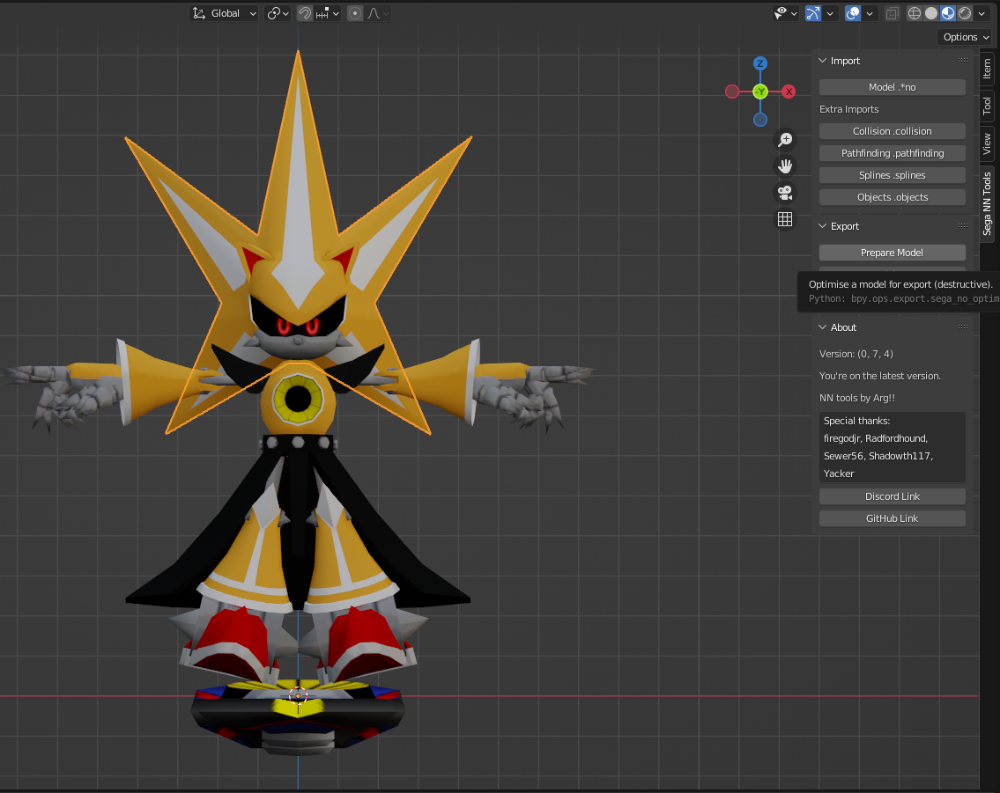
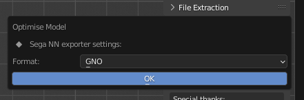
Finally, you can export the model, by selecting a mesh and choosing Model .*no underneath the Prepare model function.
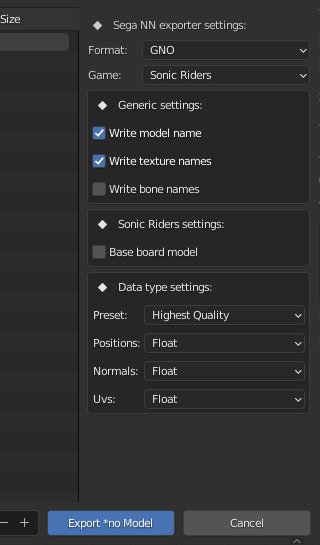
Please select the appropriate format and game.
If you are planning on exporting a character to play as in game, it's recommend to use the Player preset for Data type settings.
If you are exporting a model to just be played on boards [i.e. You are exporting to SRDX 2.0 and above], please export the character without a board, and with the Base board model setting selected.
For any characters on skates or bikes you should have the skates / bike be part of the model you are exporting, and you should have this setting off.
Tip
Both the model preparer and exporter support batch preparing / exporting. Simply select two models rigs or meshes and run the prepare / export function.
Texture Packing
Info
Shows how to unpack and repack textures from your model archive
File 00001 in the 000_ folder contains the textures that the model uses. In order to change the textures to support your new model, we will require a few things:
Firstly, use the RidersTextureArchivetool to unpack the file and view its contents. An example here (do not forget the --bigendian flag if working with gamecube):
RidersTextureArchiveTool.exe extract --source C:\Users\sewer\Downloads\Build\output\00001 --savepath C:\Users\sewer\Downloads\Build\output\00001output
This will write to a new folder \00001output next to your other files. Inside this folder will be some textures and a file called order.txt, which lists all
textures and their order in the file.
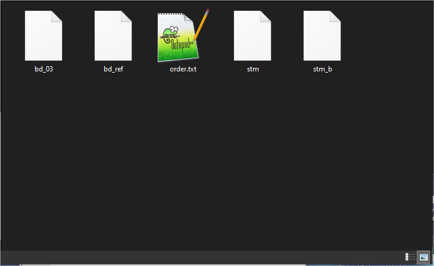
Tip
For board models, do not change the 1st texture, as this will always be the magic carpet if you are working for DX 2.0
These textures are encoded in PVR (or GVR for gamecube) format, and your textures will also need to be re-encoded the same way.
DO NOT ENCODE OVERLY LARGE TEXTURES, AS THE GAME WILL STRUGGLE. Try and stay below 512x512 sized textures for your model, you will be able to apply custom textures
over them anyway. To encode textures, select Texture > Encode
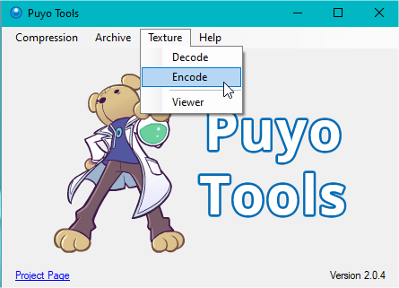
Then select GVR from the dropdown, set data format as DXT1 compressed, tick the mipmaps box and change the header to GCIX.
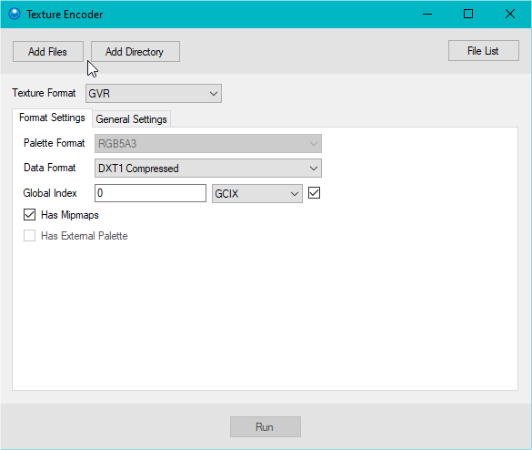
This will export the texture(s) to a file called "Encoded Textures" where your PuyoTools.exe is located:
Take your new encoded textures and place them in your extracted file where order.txt is. Delete the old character textures (these should be obviously named)
and replace them with your new ones. Then, open order.txt and edit it to line up with your new file names.
Remove the file extensions in your new textures (.gvr or .pvr) so the tool can find the files properly, or you will get errors.
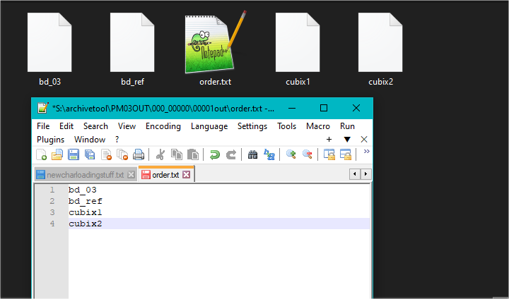
Once you are done, its time to repack the texture file, once again using RidersTextureArchivetool and the pack command this time as follows (bigendian if required:
RidersArchiveTool.exe pack --source C:\Users\sewer\Downloads\Build\output\00001output --savepath C:\Users\sewer\Downloads\Build\output\00001new
Now you have your new file 00001new, rename it to 00001 and delete the old file with the same name in the directory where your model is,
replacing it with the new one. Textures all packed and ready to go!
Packing Models
Info
Demonstrates how to put the model back into the game after exporting.
Rename your exported .gno / .xno to the name of the original file that you extracted (e.g. 00000.gno); then replace the file.
In order to pack the archive, you would again use RidersArchiveTool, but this time with the pack command, like so:
RidersArchiveTool.exe pack --source C:\Users\sewer\Downloads\Build\output --savepath C:\Users\sewer\Downloads\Build\PA00
If you are targeting GameCube, you should specify --bigendian and it is recommended to use the --compress flag. If you are targeting PC, it's recommended to specify neither flag.
Once you have packed the archive, replace the original one in the game folder and give it a go.
Tip
If you are working with the PC version, you should create a Reloaded-II Mod. This will make it easier for people to use and will prevent you from overwriting your original game files.
Credits
Arg!! & Sewer56 for the original creation of this guide.